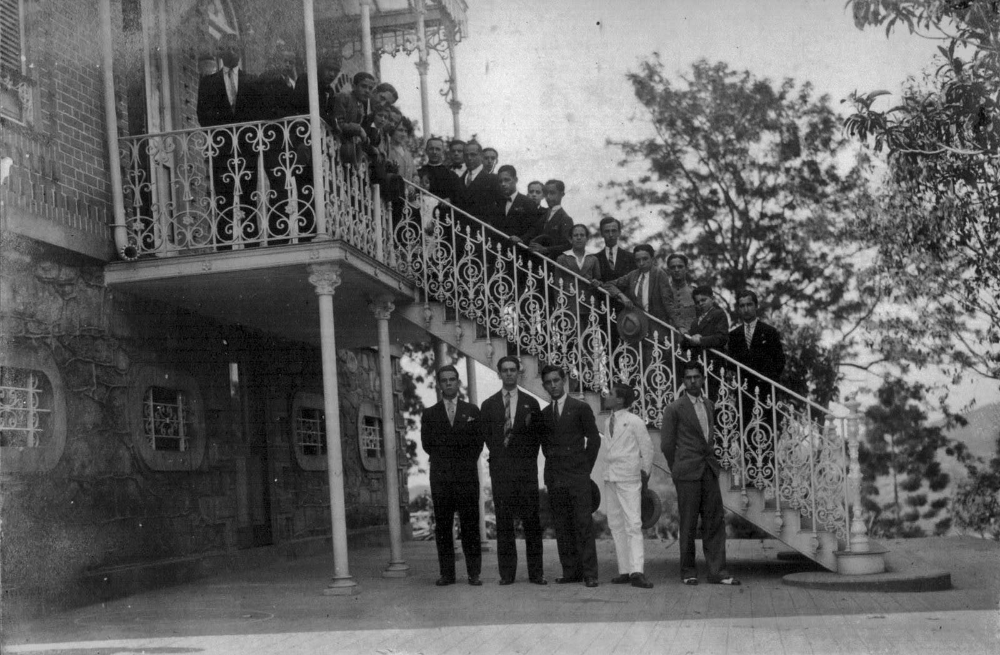
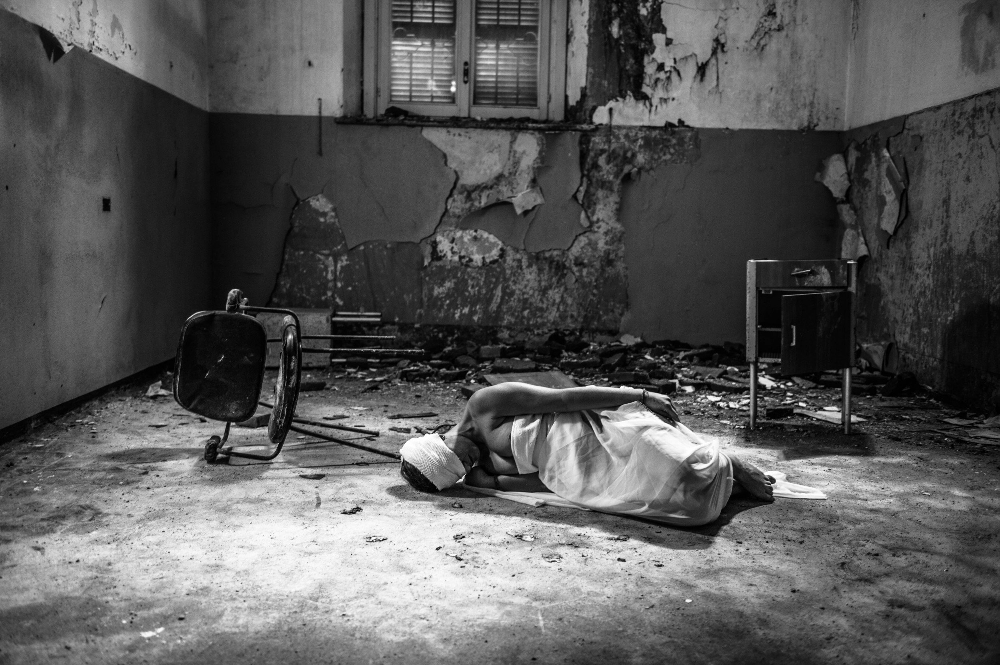
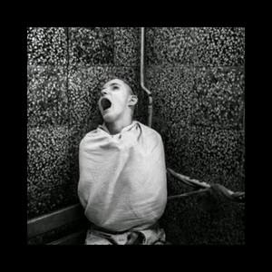
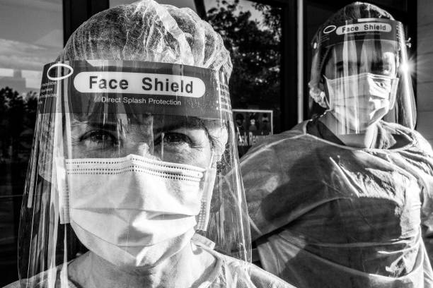

Instituto Serenidade
Bem-vindo ao Instituto Psiquiátrico Serenidade. Nossa instituição é um refúgio dedicado ao cuidado compassivo da saúde mental, projetado para proporcionar um ambiente seguro e terapêutico. Localizado em um cenário tranquilo, o manicômio é cercado por jardins serenos e estruturas acolhedoras.
Os edifícios do Instituto são modernos e equipados com instalações avançadas para oferecer suporte integral aos residentes. Nossa equipe altamente qualificada de profissionais de saúde mental, incluindo psiquiatras, psicólogos e enfermeiros especializados, trabalha de forma colaborativa para proporcionar cuidados personalizados.
Os espaços são projetados para promover a privacidade e o conforto, com áreas de terapia individual e em grupo, salas de atividades terapêuticas e espaços ao ar livre para relaxamento e contemplação. Respeitamos a individualidade de cada residente, enfocando abordagens terapêuticas personalizadas para atender às necessidades específicas.
A segurança é uma prioridade, e contamos com medidas rigorosas para garantir um ambiente protegido para todos os residentes. Nossa abordagem é centrada na recuperação, visando não apenas tratar os sintomas, mas também promover o crescimento pessoal e a reintegração à comunidade.
No Instituto Psiquiátrico Serenidade, acreditamos que todos merecem respeito, compreensão e cuidados de qualidade em sua jornada em direção à saúde mental. Estamos comprometidos em fornecer um ambiente onde a cura e o apoio emocional são prioridades fundamentais.
